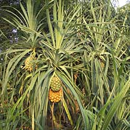

Coastal
plants
updated
Dec 2019
What
are coastal plants? Living near the coast is tough. Plants
have to withstand strong winds that blow salty water on them, and
for those that grow on rocky cliffs, precarious perches with not much
soil and have a tendency to crumble away.
Coastal plants don't grow with their roots in the sea, unlike mangroves.
You can see that they are mostly found with their roots above the
high water mark. Although sometimes, their branches and even trunks
lean well over the water. |
 Coastal forest on natural cliffs at Pulau Tekukor.
Coastal forest on natural cliffs at Pulau Tekukor. |

The seashore
pandan can form
prickly thickets near the shore. |
|
 Coastal plants
creeping out on
Coastal plants
creeping out on
to the shores in a dense carpet.
Pulau Semakau, Jan 09 |
These coastal plants come in a wide variety.
All kinds of trees, shrubs, vines and other plants can be found near
shores. These may creep out from level ground to sandy shores. Yet
others flourish on steep cliffs and rocky areas near the shores but
out of the reach of the highest tides. Some of these plants are not
exclusive to shores and can also be found elsewhere. Some plants that
grow in the back mangroves are called mangrove associates.
Role in the habitat: Like other
plants, those that grow on the coast provide many services for other
plants and animals, including humans. Coastal plants provide food
and shelter for birds and other terrestrial creatures. When their
leaves and fruits and other parts fall on the shore, these also contribute
to nutrients in the marine habitats. One study found that clown
anemonefishes find their way to anemones by the smell of the forest
leaves in the water. |
| Photos
of coastal forest on Singapore shores |
Threatened
coastal plants of Singapore
from
Davison, G.W. H. and P. K. L. Ng and Ho Hua Chew, 2008. The Singapore
Red Data Book: Threatened plants and animals of Singapore.
| |
Barringtonia
asiatica (CR: Critically Endangered)
Barringtonia conoidea (NE: Nationally Extinct)
Barringtonia macrostachya (CR: Critically Endangered)
Barringtonia racemosa (CR: Critically Endangered)
Barringtonia reticulata (CR: Critically Endangered) |
| |
Pouteria
linggensis (CR: Critically Endangered)
Pouteria maingayi (EN: Endangered)
Pouteria malaccensis (VU: Vulnerable) |
|
References
- Davison,
G.W. H. and P. K. L. Ng and Ho Hua Chew, 2008. The Singapore
Red Data Book: Threatened plants and animals of Singapore.
Nature Society (Singapore). 285 pp.
|
|
|